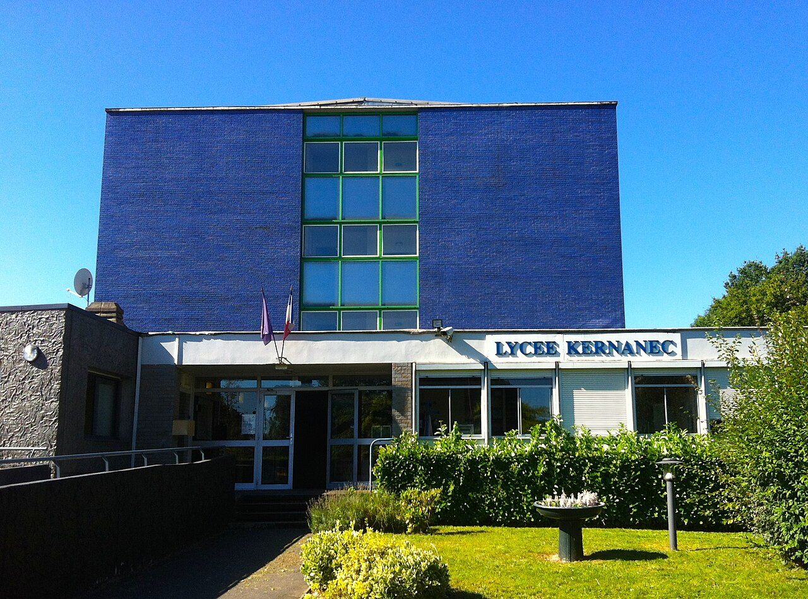

2023 — en cours
BUT Informatique
Parcours réalisation d'applications : conception, développement, validation
IUT de Lille
2020 — 2023
Baccalauréat Général
Spécialités NSI et Mathématiques · Section européenne Anglais
Lycée Kernanec